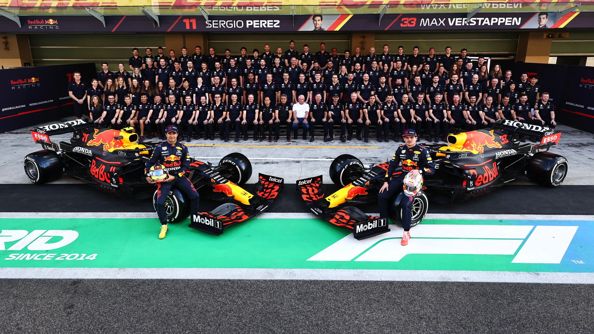
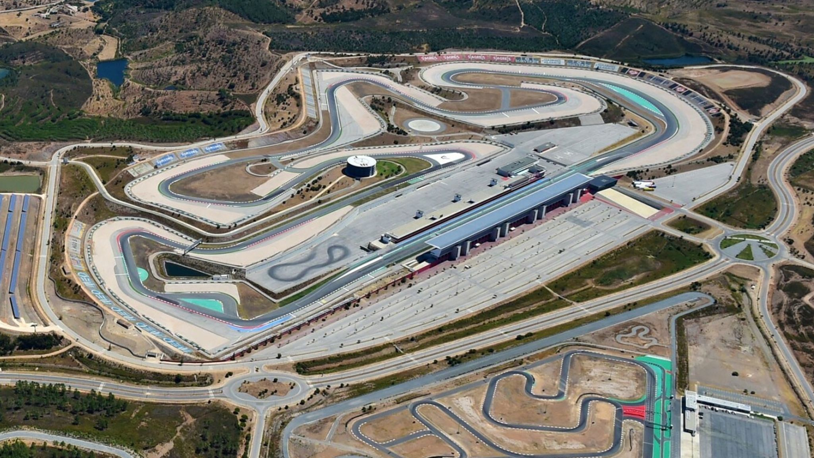
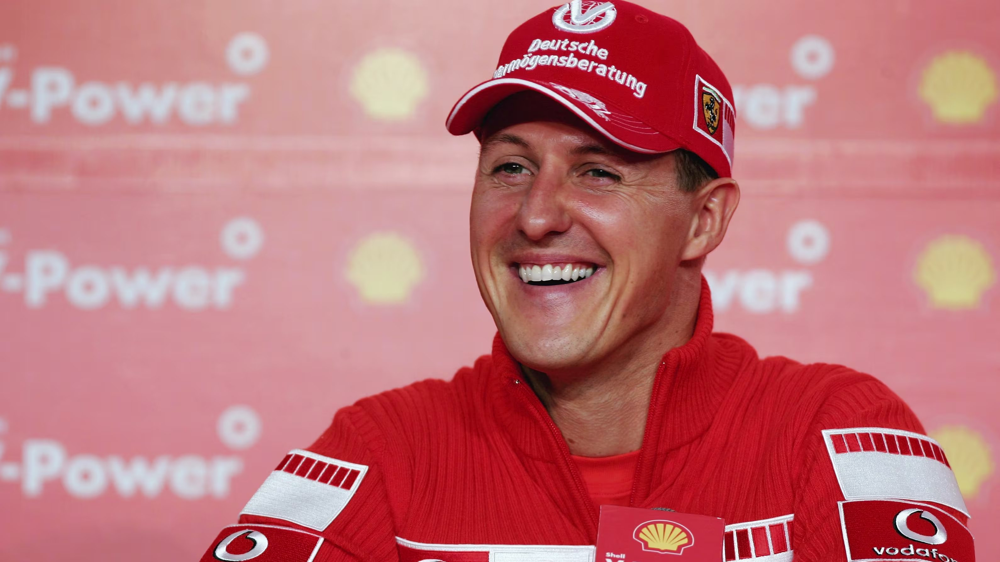

PROJECT
PROJECT
Benvenuto nel mio sito dedicato alla Formula 1!
Se sei appassionato di motori, velocità, competizione e adrenalina allora ti trovi nel posto giusto.
Questo sito nasce con l'obiettivo di realizzare un progetto (“capolavoro”) da inserire nella piattaforma Unica, per rappresentare il livello di competenze informatiche raggiunto durante l'anno, ma anche per mettermi alla prova e realizzare qualcosa che negli anni terrò come ricordo.
Qui potrai trovare una panoramica completa su piloti, team, circuiti, classifiche e tantissime altre cose interessanti,
organizzata in modo semplice e intuitivo per permettere a chiunque di orientarsi facilmente tra i contenuti.
La Formula 1 non è solo velocità e precisione, ma anche strategia, lavoro di squadra e innovazione tecnologica.
Per questo motivo ho deciso di realizzare un progetto che non si limita a mostrare solo dati, ma che provi anche a trasmettere
l'emozione e la complexity che si nascondono dietro ogni gara.
Navigando nel sito potrai scoprire informazioni sui protagonisti del campionato,
approfondire i dettagli dei circuiti più iconici e consultare le classifiche aggiornate.
Oltre alle sezioni informative, ho inserito anche alcune parti interattive per rendere l'esperienza più dinamica e coinvolgente per l'utente,
così da unire contenuti legati alla Formula 1 anche a momenti più leggeri grazie ad alcuni minigiochi.
L'idea è quella di creare uno spazio che non sia solo consultabile,
ma anche interessante da esplorare e divertente da usare.
Questo progetto rappresenta anche un modo per mettere in pratica le mie conoscenze nel campo dell'informatica e dello sviluppo web,
cercando di migliorare sia dal punto di vista del codice sia nell'organizzazione dei file e nella gestione del progetto.

Scopri i protagonisti e le scuderie della stagione.

Esplora le piste più iconiche del mondiale.

Rivivi la storia e i grandi vincitori della Formula 1.
Il mio nome e' Nicolo' Piumatti, ho 16 anni e sono nato a Cuneo il 05/10/2009. Attualmente vivo a Fossano
e frequento l'istituto tecnico superiore Giancarlo Vallauri nell'indirizzo informatico.
La mia passione per la Formula 1 nacque nel 2019 quando vidi il mio primo gran premio disputato a Melbourne
con vittoria di Valterri Bottas che al tempo guidava la Mercedes. E da li' inizio' il lungo percorso che mi ha portato fino a qua, a creare questa pagina web.
Come ho spiegato nel paragrafo iniziale dedicato alla descrizione in generale su che cosa si basava questo progetto
ho affermato che l'obiettivo era mettermi alla prova e così ho deciso di non sapere una semplice pagina web, ma di farne diverse con l'obiettivo oltre che
di migliorare anche di imparare nuovi comandi dei 3 linguaggi su cui si baserà questo sito (HTML, CSS E JS).
E' percio' che ho deciso di impormi questa mini sfida da completare in meno due mesi cercando di dare tutto me stesso e provare a completare questo progetto.
Attraverso questo progetto sto cercando di migliorare non solo dal punto di vista tecnico, ma anche nella gestione del lavoro e nell'organizzazione delle varie parti del sito.
L'obiettivo è quello di continuare a imparare e rendere questo progetto sempre più completo nel tempo.